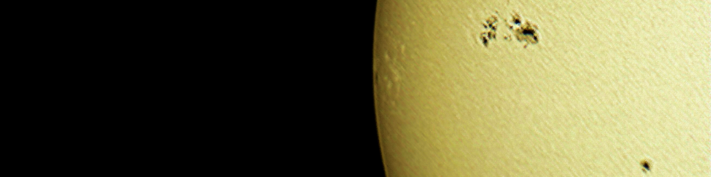
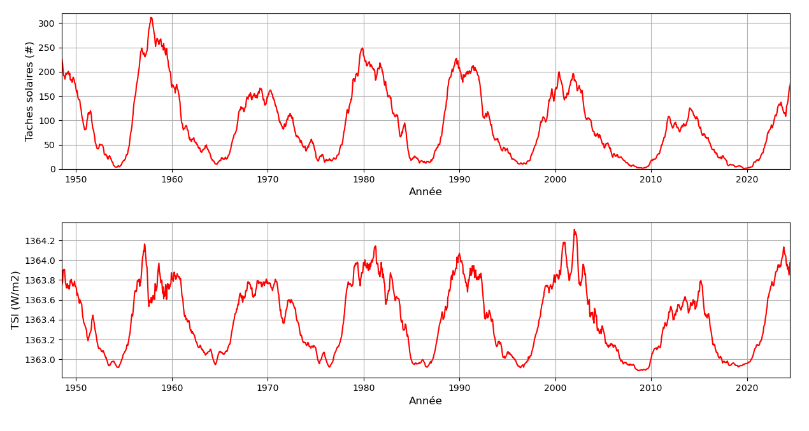
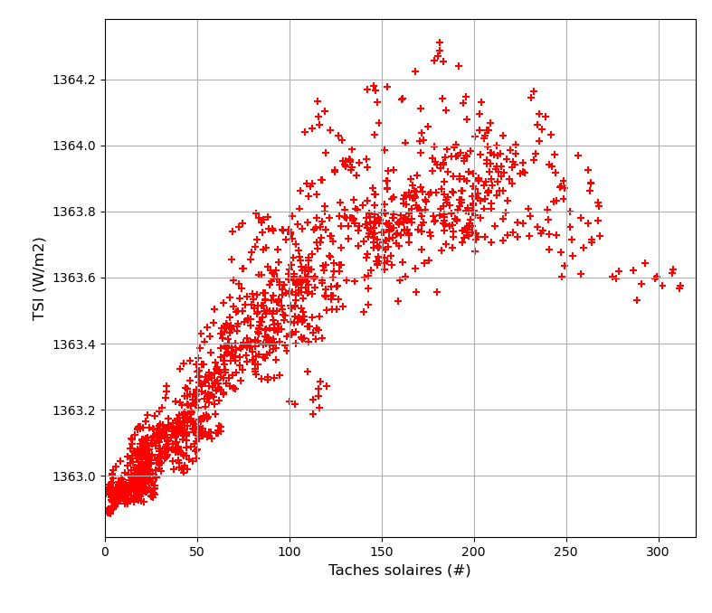

Chapitre III : Régression
Ce chapitre est une introduction à la régression : principe, mesures de performances et méthodes de base.

Problème de régression
Comme mentionné lors du Chapitre I, par "régression" on entend associer une réalisation d'une variable quantitative continue à un individu (labels), à partir des réalisations d'autres variables (features).
On cherche donc une relation entre les variables d'entrée (aussi appelées "variables explicatives") et la variable de sortie (aussi appelée "variable de réponse").
Il existe 2 grands types de relations entre variables :
- La relation est déterministe si on considère que la variable de sortie peut être connue exactement à partir des variables d'entrée.
Par exemple, si je veux déterminer le rayon \(R\) d'une étoile par rapport à sa luminosité \(L\) et sa température \(T\), en m'appuyant sur la théorie du corps noir, j'utilise la formule \(R = \sqrt{\frac{L}{4 \pi \sigma T^4}}\).
- La relation est probabiliste si on considère que d'autres facteurs que les variables d'entrée vont influer sur la valeur de la variable de sortie.
Dans ce cas, une même réalisation des variables d'entrée pourra être associée à plusieurs valeurs de la variable de sortie, et inversement.
Mais si les variables d'entrée et de sortie sont corrélées, la relation sera tout de même utile pour réaliser des prédictions avec une certaine marge d'erreur.
C'est souvent le cas en Physique, lorsque l'on réalise des mesures pour expliquer un phénomène. Si on reprend notre exemple précédent : la théorie du corps noir n'explique pas parfaitement la rayonnement d'une étoile, et on peut avoir des erreurs de mesures de \(L\), \(T\) et \(R\). Mais si \(L\), \(T\) et \(R\) sont correlées, alors on peut essayer de prédire \(R\) à partir de \(L\) et \(T\), moyennant une certaine erreur.
C'est tout le principe de la régression : déterminer une relation probabiliste entre les variables d'entrée et la variable de sortie.
Nous avions aussi mentionné lors du Chapitre I qu'entrainer un modèle de régression ne peut se faire que par apprentissage supervisé. L'idée est encore une fois que le modèle soit ensuite capable de généraliser à de nouvelles observations.
| Anecdote historique |
|---|
| Le nom de "régression" vient du généticien Francis Galton, qui l'utilisa pour son étude sur la "régression vers la moyenne". |
| En fait, Galton cherchait à modéliser un phénomène d'hérédité qu'il observait dans la population humaine : |
| La taille des fils avait tendance à se rapprocher de la moyenne de la population par rapport à celle de leur père. |
Les différents types de régression
Suivant le nombre d'entrées et le type de modèle à ajuster aux données, on a différents types de problèmes de régression. Nous allons voir ici les 3 plus courants.
Régression linéaire simple
La régression linéaire simple est le problème de régression le plus basique qui soit.
On recherche une relation linéaire entre une variable d'entrée \(x\) et une variable de sortie \(y\). L'erreur est une variable aléatoire notée \(\epsilon\).
Le modèle à ajuster est le suivant :
\(y = \alpha x + \beta + \epsilon\)
avec les paramètres \(\alpha\) et \(\beta\) à déterminer.
Il s'agit d'un problème d'inférence statistique : nous disposons d'un jeu d'entrainement qui est un échantillon de la population totale, et nous voulons en déduire une estimation de \(\alpha\) et \(\beta\) nous permettant de réaliser des prédictions.
Nous verrons que l'on fait en général les hypothèses suivantes sur \(\epsilon\) :
-
Indépedance de ses réalisations.
-
Moyenne nulle.
-
Ecart-type constant.
Afin de pouvoir donner un "intervalle de confiance" aux prédictions, on va en plus ajouter une hypothèse de normalité : \(\epsilon\) suit une loi normale. Nous en reparlerons plus tard.
Régression linéaire multiple
On peut généraliser le modèle de la section précédente aux problèmes avec plusieurs variables d'entrée.
Si on note \(x_1\), \(x_2\), ..., \(x_n\) les \(n\) variables d'entrée, et \(y\) notre variable de sortie.
Le modèle à ajuster devient :
\(y = \alpha_1 x_1 + \alpha_2 x_2 + ... + \alpha_n x_n + \beta + \epsilon\)
On reconnait la formule d'un hyperplan de dimension \(n\).
On peut mettre cette formule sous forme matricielle :
\(y = A.x + \epsilon\)
avec \(A = \begin{pmatrix} \beta\\ \alpha_1\\ \alpha_2\\ \vdots\\ \alpha_n \end{pmatrix}\)
et \(x = \begin{pmatrix} 1\\ x_1\\ x_2\\ \vdots\\ x_n \end{pmatrix}\)
Nous verrons dans la suite comment généraliser les méthodes aux problèmes multiples.
Régression polynomiale
Comment faire lorsqu'un modèle linéaire n'est pas pertinent pour représenter la relation entre nos variables ?
Afin de réaliser une régression non-linéaire, il y a une astuce : on cherche à ajuster un modèle polynomial.
Pour un ordre \(k\), il aura la forme :
\(y = \alpha_1 x + \alpha_2 x^2 + ... + \alpha_n x^n + b + \epsilon\)
Il y a alors une astuce : si on considère \(x\), \(x^2\), ..., \(x^n\) comme \(n\) variables d'entrée, alors on reconnait un problème de régression multiple !
On peut donc le traiter avec les mêmes méthodes qu'un problème linéaire.
Il existe d'autres techniques d'ajustement de modèles non-linéaires, que nous ne traiterons pas dans le cadre de ce cours.
Exemple de problème
Est-il possible de prédire l'intensité du rayonnement solaire à partir du nombre de taches solaires ?
Les taches solaires sont des zones de "faible" température (4500 K contre 5800 K) la surface du soleil (photosphère). Elles apparaissent lorsque l'apport de chaleur à la surface par convection est inhibé par une concentration de lignes de champs magnétique.
On sait observer les taches solaires depuis l'antiquité, et on a des mesures du nombre taches solaires depuis le XVIIème, qui varie entre 0 et 350 environ. On l'utilise comme un marqueur de l'activité solaire depuis le milieu XIXème siècle.
Un autre marqueur connu de l'activité solaire est l'"irradiance solaire" totale ou TSI en anglais. Il s'agit de la puissance du rayonnement solaire reçue en haut de l'atmosphère ter restre, par unité de surface. Sa valeur est d'environ 1363 \(W/m^2\), avec de légères variations suivant l'activité solaire.
La TSI est un paramètre clé en climatologie, puisqu'il correspond à l'énergie apportée par le soleil à la Terre. Mais sa mesure n'est pas aisée : il ne peut être obtenu que par des satellites.
Voici l'évolution du nombre de taches solaires et du TSI depuis 1948 jusqu'à 2024 :

On a ici 20 points par an, avec un filtrage de moyenne glissante sur une 1/2 année, soit 1531 points au total. Elles sont issues de l'Observatoire Royal de Belgique (SILSO, Dewitte et al. 2022).
On observe que le nombre de taches solaires comme la TSI suivent les mêmes cycles de 11 ans environ, correspondant aux cycles de l'activité solaire. On imagine alors que la corrélation entre les 2 grandeurs doit être forte.
D'où l'idée suivante : peut-on entrainer un modèle à estimer la TSI à partir du nombre de taches solaires ?
Voici les données d'où sont issues les courbes précédentes, au format CSV : Chap3_sunspots_dataset
Le tableau de données qu'il contient est de la forme :
| year | tsi | sunspots |
|---|---|---|
| 1948.25 | 1363.743 | 193.667 |
| 1948.30 | 1363.729 | 196.541 |
| 1948.35 | 1363.722 | 205.891 |
| 1948.40 | 1363.713 | 215.623 |
| 1948.45 | 1363.729 | 218.060 |
| ... | ... | ... |
| 2024.65 | 1364.015 | 172.536 |
| 2024.70 | 1364.013 | 170.525 |
| 2024.75 | 1364.038 | 171.563 |
Il contient pour chacun des 1531 points l'année (sous forme décimale), la TSI moyenne (en \(W/m^2\)) et le nombre de taches solaires moyen sur une fenêtre d'une 1/2 année.
Notre problème de régression sera la suivant : prédire la TSI moyenne sur une 1/2 année à partir du nombre de taches solaires moyen sur cette même fenêtre.
Voyons d'abord si une telle régression est possible à partir de ces données.
Une fois le fichier CSV téléchargé, il peut être importé sous Python en tant que DataFrame Pandas à partir de son chemin d'accès "input_path" :
import pandas as pd
df_dataset = pd.read_csv(input_path)
On peut alors utiliser la méthode "plot" des DataFrames pandas pour afficher la TSI en fonction du nombre de taches solaires, sous la forme d'un nuage de points :
df_dataset.plot(x='sunspots',y='tsi',kind='scatter',c='r',marker='+')
Voici le résultat :

On observe comme attendu que les 2 grandeurs ont l'air fortement corrélées. Cependant, on peut déjà constater que : (1) la relation n'a l'air linéaire que pour des nombres de taches solaires faibles (moins de 150-200), (2) la dispersions des points a l'air d'augmenter avec le nombre de taches solaires.
Ces observations seront importantes dans la suite.
On peut également calculer le coefficient de corrélation entre la TSI et le nombre taches solaires, en utilisant la méthode "corr" des DataFrames Pandas :
df_dataset['tsi'].corr(df_dataset['sunspots'])
On trouve un coefficient de corrélation de 0.89 environ, ce qui confirme une forte corrélation entre les variables. Vouloir entrainer un modèle à prédire la TSI à partir du nombre de taches solaires a donc un sens.
Il est à noter que nous avons ici grandement simplifié le problème et sa résolution pour les besoins de ce cours. Une vraie stratégie de validation pour optimiser les hyperparamètres et éviter le sur-apprentissage ne sera pas appliquée.
L'idée est que nous verrons cet exemple plus en détails en TP.
Mesures de performances
Nous allons passer en revue dans cette section les principaux indicateurs de performances applicables à la régression linéaire.
Table ANOVA
Soit un problème de régression dont la variable de sortie est notée \(y\). On veut évaluer les performances d'un modèle de régression sur un jeu de données issu de ce problème.
La moyenne des valeurs de \(y\) au sein de cet échantillon est notée \(\overline{y}\). La valeur de \(y\) pour le i-ème individu de cet échantillon sera notée \(y_i\).
Admettons que l'on a ait déterminé un modèle de regression linéaire pour ces données. On note \(\hat{y_i}\) la prédiction de ce modèle linéaire pour le i-ème individu.
Pour juger de la qualité du modèle, on divise les écarts en 2 groupes :
- Les écarts résiduels, ou "résidus" : \(y_i - \hat{y_i}\)
Il s'agit des écarts non-expliqués par le modèle.
- Les écarts écarts de régression, ou "écarts expliqués" : \(\hat{y_i} - \overline{y}\)
Il s'agit des écarts expliqués par le modèle.
On a alors l'écart total :
\(y_i - \overline{y} = (y_i - \hat{y_i}) - (\hat{y_i} - \overline{y})\)
On met en général ces écarts sous la forme de variances, en prenant la somme des carrés des \(p\) individus de cet échantillon :
-
SCR ("somme des carrés des résidus") : \(\sum_{i=1}^{p} (y_i - \hat{y_i})^2\)
-
SCE ("somme des carrés expliqués") : \(\sum_{i=1}^{p} (\hat{y_i} - \overline{y})^2\)
-
SCT ("somme des carrés totale") : \(\sum_{i=1}^{p} (y_i - \overline{y})^2\)
avec \(SCT = SCR + SCE\)
Un modèle sera d'autant plus performant que la SCR sera faible comparée à la SCT.
L'idée est la suivante : plus la SCE est grande (et donc plus la SCR est faible), et plus le modèle explique \(y\) à partir des entrées.
On range en général ces valeurs sous la forme d'un tableau, nommé "table ANOVA" (contraction en anglais de "ANalysis Of VAriance") :
| \(x_i\) | \(y_i\) | \(\hat{y_i}\) | \(\hat{y_i} - \overline{y}\) | \((\hat{y_i} - \overline{y})^2\) | \(y_i - \hat{y_i}\) | \((y_i - \hat{y_i})^2\) |
|---|---|---|---|---|---|---|
| ... | ... | ... | ... | ... | ... | ... |
| \(\overline{x}\) | \(\overline{y}\) | SCE | SCR | SCT |
|---|---|---|---|---|
| ... | ... | ... | ... | ... |
On peut trouver des variantes de cette table, mais elle contient toujours au moins la SCE, la SCR et la SCT.
Coefficient de détermination
La table ANOVA est une représentation plutôt exhaustive des performances en régression linéaire.
Mais comme souvent, on voudrait pouvoir résumer au mieux les performances avec un score unique dérivé de cette table.
Le critère le plus utilisé est le coefficient de détermination, noté \(R^2\) :
\(R^2 = \frac{SCE}{SCT} = \frac{\sum_{i=1}^{p} (\hat{y_i} - \overline{y})^2}{\sum_{i=1}^{p} (y_i - \overline{y})^2} = 1 - \frac{SCR}{SCT} = 1 - \frac{\sum_{i=1}^{p} (y_i - \hat{y_i})^2}{\sum_{i=1}^{p} (y_i - \overline{y})^2}\)
Le \(R^2\) s'interprète comme la proportion de l'écart total expliquée par le modèle.
Il s'agit donc d'un score entre 0 et 1 : plus la valeur est proche de 1, et meilleur est le modèle.
Par exemple, mettons que l'on utilise la luminosité d'une étoile pour essayer de prédire son rayon, grâce à une régression linéaire. Si le \(R^2\) du modèle est de 0.75 sur un échantillon de données, cela veut dire que le modèle explique 75% de la variation du rayon de l'étoile. Les 25% restants sont expliqués par les erreurs.
On remarque que le \(R^2\) correspond au carré du coefficient de corrélation (voir Chapitre 1) entre les valeurs observées \(y_i\) et les valeurs prédites \(\hat{y_i}\).
| Nota Bene |
|---|
| En régression linéaire simple, le \(R^2\) est égal au carré du coefficient de corrélation entre \(x\) et \(y\). |
| Ce n'est pas vrai pour la régression linéaire multiple. |
Analyse des résidus
Lorsque les performances d'un modèle de régression linéaire ont l'air mauvaises, on a envie de comprendre pourquoi.
La bonne approche est de réaliser une analyse des résidus.
Dans un 1er temps, cette analyse peut être visuelle. On affiche simplement les résidus en fonction de \(x\) ou de \(y_i\), et on vérifie s'ils ont l'air d'avoir le comportement attendu de \(\epsilon\) :
-
Indépendance des observations.
-
Moyenne nulle.
-
Ecart-type constant.
-
Normalité.
Dans l'idéal, on attend donc un nuage de points aléatoires, stationnaire, sans tendances en fonction de \(x\) ou des \(y_i\).
Si ce n'est pas le cas, alors il faut soit :
-
Revoir notre modèle (une régression linéaire n'est peut-être pas adaptée).
-
Nettoyer nos données (des outliers ou des données abérrantes sont peut-être la cause du mauvais ajustement).
-
Ajouter des variables explicatives (\(x\) n'est peut-être pas suffisant pour expliquer \(y\) de manière satisfaisante).
En cas de doute, on peut procéder à des tests de ces hypothèses, mais ils ne sont pas tous simples à mettre en place.
Normalité
Pour vérifier si les résidus suivent une loi normale de moyenne nulle, on peut afficher leurs quantiles en fonction ceux attendus d'une loi normale.
On obtient alors un graphique appelé "droite de Henry".
Si les résidus ne suivent pas une loi normale, ils s'éloigneront de la diagonale.
Homoscédasticité
On appelle "homoscédasticité" le fait d'avoir un écart-type constant pour toutes les observations. Si cette hypothèse n'est pas vérifiée, on parle d'"hétéroscédasticité".
Il existe différents tests d'homoscédasticité, par exemple le test de White, mais le plus simple reste l'interprétation visuelle :
-
Si les résidus en fonction de \(x\) s'éloignent de plus en plus de 0, on a probablement une hétéroscédasticité.
-
Si on observe une tendance dans les résidus en fonction des \(y_i\), on a probablement une hétéroscédasticité.
Indépendance
Il n'est pas simple de vérifie l'indépendance des résidus en fonction des observations.
Un exemple de test connu est celui de Durbin-Watson. Mais encore une fois, le plus simple reste l'interprétation visuelle :
- Si on observe une tendance dans les résidus en fonction de \(x\), on a probablement une dépendance des résidus aux observations.
Méthodes de base
Moindres carrés ordinaire
Les moindres carrés ordinaire (MCO) est la méthode de régression linéaire la plus basique qui soit. S'il s'agit originellement d'une méthode de statistiques descriptives, nous verrons que l'on peut s'en servir pour faire de l'inférence statistique.
Principe
Comme nous venons de le mentionner, les MCO a originellement un but descriptif.
Si on a un jeu de données contenant une variable explicative \(x\) et une variable de réponse \(y\), on cherche : quelle droite d'équation \(y = a x + b\) représente le mieux la distribution des \(p\) points \((x_i,y_i)\) de cet échantillon ?
\(a\) et \(b\) seront alors 2 indicateurs statistiques caractérisant notre échantillon.
Mais comment déterminer qu'une droite représente au mieux un nuage de points ?
La méthode des MCO considère que la droite d'équation \(y = a x + b\) représentant le mieux les \(p\) point de notre échantillon est celle qui minimise :
\(\sum_{i=1}^{p} (y_i - a x_i - b)^2\)
D'où le nom de la méthode : on cherche les "moindres carrés".
On peut montrer que les paramètres \(a\) et \(b\) minimisant cette fonction sont :
\(a = \frac{\sum_{i=1}^{p} (x_i-\overline{x})(y_i-\overline{y})}{\sum_{i=1}^{p} (x_i-\overline{x})^2}\)
\(b = \overline{y} - a \overline{x}\)
On notera pour simplifier les expressions :
\(sc_{xx} = \sum_{i=1}^{p} (x_i-\overline{x})^2\)
\(sc_{yy} = \sum_{i=1}^{p} (y_i-\overline{y})^2\)
\(sc_{xy} = \sum_{i=1}^{p} (x_i-\overline{x})(y_i-\overline{y})\)
D'où \(a = \frac{sc_{xy}}{sc_{xx}}\)
| Nota Bene |
|---|
| La droite déterminée par les MCO passera toujours par le point \((\overline{x},\overline{y})\). |
Meilleur Estimateur Linéaire Non-biaisé (BLUE)
Revenons à notre problème de régression linéaire simple : à partir de notre échantillon, nous voulons trouver un modèle liant nos variables \(x\) et \(y\), de la forme \(y = \alpha x + \beta + \epsilon\).
Sous certaines conditions sur \(\epsilon\), nous pouvons appliquer le théorème de Gauss-Markov à notre problème :
| Théorème de Gauss-Markov |
|---|
| On cherche à modéliser une relation \(y = \alpha x + \beta + \epsilon\) entre 2 variables \(x\) et \(y\), à partir d'un échantillon de réalisations \((x_i,y_i)\). |
| Si \(\epsilon\) vérifie : |
| - Une moyenne nulle. |
| - Un écart-type constant. |
| - Une non-corrélation de ses réalisations. |
| Alors, les paramètres \(a\) et \(b\) de la droite déterminée par les MCO est le Meilleur Estimateur Linéaire Non-biaisé ("BLUE" en anglais) de \(\alpha\) et \(\beta\). |
On peut donc se servir de la méthode des MCO pour estimer \(\alpha\) et \(\beta\) à partir de notre échantillon de points \((x_i,y_i)\).
Il est même possible d'estimer l'écart-type de \(\epsilon\) avec l'estimateur suivant :
\(s = \sqrt{\frac{\sum_{i=1}^{p} (y_i-\overline{y_i})^2}{n-2}}\)
Reste alors une problématique :
Si j'utilise mon modèle pour réaliser une prédiction \(\hat{y_{p+1}}\) à partir d'une nouvelle valeur \(x_{p+1}\), c'est-à-dire en calculant \(\hat{y_{p+1}} = \alpha x_{p+1} + \beta\), à quel point puis-je avoir confiance en ma prédiction ?
Intervalles de confiance et de prédiction
Comme pour tout problème d'inférence statistique, lorsque l'on a obtenu notre modèle de régression linéaire, on se pose alors les questions suivantes :
-
Quelle est mon incertitude sur les \(\alpha\) et \(\beta\) trouvés à partir de mon échantillon ?
-
Pour une valeur de \(x\) fixée, quelle est mon incertitude sur la moyenne des \(y\) avec mon modèle de régression linéaire ?
-
Pour un nouvelle observation de \(x\), quelle est mon incertitude sur la valeur de \(y\) prédite par mon modèle de régression linéaire ?
Pour répondre à ces questions, nous allons utiliser des intervalles de confiance.
L'hypothèse de normalité de \(\epsilon\) implique que les estimations de \(\alpha\) et de \(\beta\) à partir d'un échantillon suivent une loi normale. Mais nous ne pouvons qu'estimer son écart-type, puisque nous ne disposons que d'un échantillon.
Il nous faut donc utiliter la loi de Student, et plus particulièrement le "t de Student".
| Rappels sur le t de Student |
|---|
| Soit une population de moyenne \(\mu\) et d'écart-type inconnu, dont on récupère un échantillon de \(p\) points, de moyenne estimée \(\overline{x}\) et d'écart-type estimé \(s\). |
| Alors la variable aléatoire \(t = \frac{\overline{x}-\mu}{s/\sqrt{p}}\) suit une loi de Student, dont on peut se servir pour établir un intervalle de confiance sur l'estimation \(\overline{x}\) de \(\mu\). |
| On note \(t_{\gamma}^{k}\) le quantile de seuil d'erreur \(\gamma\) de la loi de Student à \(k\) degrés de liberté. |
| Le seuil de confiance est alors \(1-\gamma\) : pour seuil de confiance à 99% on prendra \(\gamma = 0.01\). |
| La loi normale étant symétrique, pour déterminer un intervalle de confiance de seuil \(1-\gamma\), il faut en réalité utiliser \(t_{\gamma/2}^{k}\). |
| Donc pour un intervalle de confiance à 99% on prendra \(\gamma = 0.005\). |
| On a alors : |
| \(p(\overline{x} - t_{\gamma/2}^{p-1} \frac{s}{\sqrt{p}} \leq \mu \leq \overline{x} + t_{\gamma/2}^{p-1} \frac{s}{\sqrt{p}}) = 1 - \gamma\) |
| avec \(k = p-1\) car on a utilisé 1 degré de liberté pour estimer \(\mu\). |
| Nota Bene : |
| Il est à noter que plus \(p\) est grand (et donc plus \(k\) est grand) et plus le \(t\) se rapproche d'une loi normale. |
Dans notre cas, nous avons utilisé 2 degrés de liberté pour estimer \(\alpha\) et \(\beta\), nous utiliserons donc le t de Student pour \(p-2\) degrés de liberté.
On peut donc établir les intervalles de confiance à \(1-\gamma\) suivants sur \(a\) et \(b\) :
\(\alpha \in [a - t_{\gamma/2}^{p-2} s(a) ; a + t_{\gamma/2}^{p-2} s(a)]\)
\(\beta \in [b - t_{\gamma/2}^{p-2} s(b) ; b + t_{\gamma/2}^{p-2} s(b)]\)
avec les écart-types estimés :
\(s(a) = \frac{s}{\sqrt{sc_{xx}}}\)
\(s(b) = s \sqrt{\frac{1}{p} + \frac{\overline{x}^2}{sc_{xx}}}\)
| Nota Bene |
|---|
| Il est à noter que si tous les \(x_i\) de l'échantillon sont égaux, alors \(x_i = \overline{x}\), d'où \(sc_{xx} = 0\) et donc les intervalles de confiance deviennent infinis. |
| Ce résultat est attendu, puisqu'on ne peut pas tirer d'information sur la relation entre \(x\) et \(y\) avec des points pour un seul \(x_i\). |
De la même manière, on peut estimer pour une valeur de \(x\) donnée \(x=u\) l'intervalle de confiance à \(1-\gamma\) sur la moyenne des \(y\) :
\(\alpha u + \beta \in [a u + b - t_{\gamma/2}^{p-2} s(\hat{y}) ; a u + b + t_{\gamma/2}^{p-2} s(\hat{y})]\)
avec
\(s(\hat{y}) = s \sqrt{\frac{1}{p} + \frac{(u-\overline{x})^2}{sc_{xx}}}\)
Enfin, on peut estimer l'intervalle de prédiction sur \(y_{p+1}\) pour une nouvelle donnée \(x_{p+1}\) :
\(y_{p+1} \in [a x_{p+1} + b - t_{\gamma/2}^{p-2} s(y_{p+1}) ; a x_{p+1} + b + t_{\gamma/2}^{p-2} s(y_{p+1})]\)
avec
\(s(y_{p+1}) = s \sqrt{1 + \frac{1}{p} + \frac{(x_{p+1}-\overline{x})^2}{sc_{xx}}}\)
En général, lorsque l'on affiche par-dessus le nuage de points la droite du modèle obtenu par MCO, on affiche aussi l'intervalle de confiance sur la moyenne des \(y\), et l'intervalle de prédiction. Le graphique obtenu est de la forme suivante :
| Nota Bene |
|---|
| Il est à noter que : |
| - Les intervalles de confiance sur la moyenne des \(y\) sont toujours plus petits que les intervalles de prévision. |
| - La droite obtenue par MCO passe toujours par \((\overline{x},\overline{y})\), donc plus on s'éloigne de ce point, plus les intervalles de confiance et de prédiction vont augmenter. |
Implémentation Scipy
Généralisation à la régression linéaire multiple
Les MCO peut être généralisée pour les problèmes à plus d'une variable explicative (nombre de variables explicatives \(n>1\)).
Rappelons que le modèle de régression linéaire multiple à ajuster est le suivant :
\(y = \alpha_1 x_1 + \alpha_2 x_2 + ... + \alpha_n x_n + \beta + \epsilon\)
Si nous disposons de \(p\) observations dans notre jeu de données d'entrainement, il faut que nos paramètres \(\alpha_1\), ..., \(\alpha_n\) et \(\beta\) vérifient :
\(\begin{cases} y_1 = \alpha_1 x_{1,1} + \alpha_2 x_{1,2} + ... + \alpha_n x_{1,n} + \beta + \epsilon_1\\ y_2 = \alpha_1 x_{2,1} + \alpha_2 x_{2,2} + ... + \alpha_n x_{2,n} + \beta + \epsilon_2\\ ...\\ y_p = \alpha_1 x_{p,1} + \alpha_2 x_{p,2} + ... + \alpha_n x_{p,n} + \beta + \epsilon_p\\ \end{cases}\)
Un système d'équations linéaires que l'on peut mettre sous la forme matricielle suivante :
\(Y = X A + E\)
avec
\(Y = \begin{pmatrix} y_1\\ y_2\\ \vdots\\ y_p \end{pmatrix}\)
\(X = \begin{pmatrix} 1 & x_{1,1} & x_{1,2} & \cdots & x_{1,n} \\ 1 & x_{2,1} & x_{2,2} & \cdots & x_{2,n} \\ \vdots & \vdots & \ddots & \vdots \\ 1 & x_{p,1} & x_{p,2} &\cdots & x_{p,n} \end{pmatrix}\)
\(A = \begin{pmatrix} \beta\\ \alpha_1\\ \alpha_2\\ \vdots\\ \alpha_n \end{pmatrix}\)
\(E = \begin{pmatrix} \epsilon_1\\ \epsilon_2\\ \vdots\\ \epsilon_p \end{pmatrix}\)
Avec les mêmes hypothèses sur \(\epsilon\) que pour la régression linéaire simple, on peut appliquer les MCO pour trouver le meilleur estimateur linéaire non-biaisé de \(A\).
Cette fois-ci, il s'agit de la matrice \(\hat{A}\) minimisant l'erreur quadratique moyenne (ou "MSE" en anglais) :
\(MSE = \frac{1}{p} \sum_{i=1}^{p} (y_i - \sum_{j=1}^{n} \alpha_j x_{i,j} - \beta)^2\)
On peut montrer que ce minimum est obtenu pour \(\hat{A}\) vérifiant l'équation normale suivante :
\(\hat{A} = (X^T X)^{-1} X^T Y\)
En pratique, il est rare que l'on résolve directement l'équation normale : (1) sa résolution est complexe, (2) la matrice \(X^T X\) peut ne pas être inversible (si \(p<n\) ou si certaines equations sont redondantes).
C'est pourquoi la plupart des implémentations des MCO pour de la régression linéaire multiple calculent plutôt :
\(\hat{A} = X^{+} Y\)
avec \(X^{+}\) le pseudo-inverse de \(X\).
Celui-ci est calculé en utilisant la décomposition en valeurs singulières (SVD) de \(X\).
Cette méthode à l'avantage d'être plus rapide que de résoudre l'équation normale directement, et que le pseudo-inverse de \(X\) existe toujours.
Implémentation Scikit-Learn
Application à notre exemple
Remarques
La méthode des Moindres Carrés Ordinaire a les avantages suivants :
-
Elle est relativement simple à mettre en place, avec peu de paramètres, et aucun hyperparamètre.
-
Les prédictions qu'elle réalise sont complètement expliquées et interprétables : un humain peut les comprendre. On peut établir des intervalles de confiance sur les prédictions.
-
Une fois le modèle entrainé, le temps de calcul des prédictions est rapide (linéaire par rapport au nombre de prédictions).
Mais cette méthode a aussi les limites suivantes :
-
Le temps de calcul de la SVD augmente quadratiquement avec le nombre de variables explicatives !
-
Elle demande beaucoup de mémoire pour manipuler la matrice \(X\).
Ces 2 désavantages sont les raisons pour lesquelles on utilise très peu les MCO dans les cas où le nombre de variables explicatives est grand.
Même s'il est possible d'utiliser les MCO pour de la régression non-linéaire, avec l'astuce de la régression polynomiale, plus l'ordre du polynôme est grand et plus le nombre de variables explicatives est grand. On utilise donc rarement les MCO pour des modèles non-linéaires complexes.